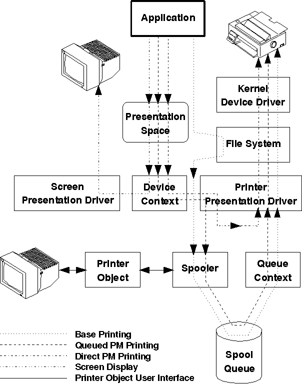

The data flow between your application, the printer driver, the spooler, and the kernel device driver is shown in the following figure. In addition to the data flow for the printer data stream, the data flow for screen output is shown. From an application's point of view, creating output for a printer is conceptually the same as creating screen output.
Overview of the Application Interface and Data Flow
There are three routes that the application's printer data can follow:
Base printing is provided primarily for non-PM programs writing complete printer data streams, including all printer control codes, directly to a printer port. It also provides compatibility for applications that run under DOS or Microsoft** Windows**.
Queued printing is recommended for all PM programs. It provides the most flexibility, both for the application and the user.
Print jobs created by PM applications are queued on a spooler queue. The spool files are processed and finally sent to the printer asynchronously from the application.
Note: If the spooler is disabled, queued print jobs perform as though they were submitted for PM direct printing.
Conceptually, direct printing is the same as queued printing for the application interface, but the spooler is bypassed. Therefore, the data is sent directly to the printer, and the application has to wait until the printing is finished. Following are some of the reasons for PM applications to avoid direct printing:
Jobs that are very large, that is, over 10MB, that you do not want copied in the spool file, also might best be printed directly.